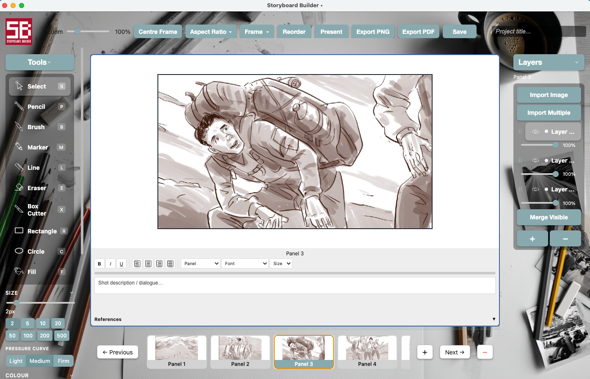
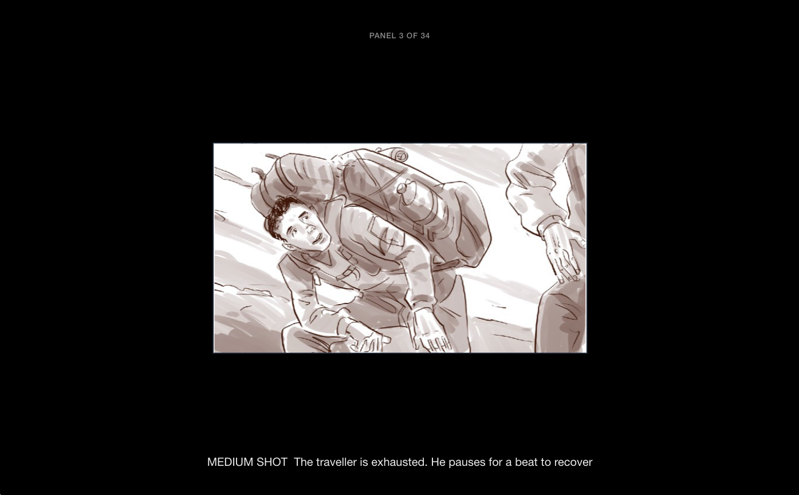

by Film Construction
A fast, simple way to build and present your storyboard — without the clutter of most tools. Whether you're working with an illustrator or drawing your own boards. Built by a working director, for commercial directors and short form content creators.
macOS only · Free while in beta

Pencil, brush, marker, line — Vector-based tools for easy modification and adjustment.
Bring in artwork from Procreate, Fresco, or anywhere else. Assemble your boards without the usual clunky workflow.
Each panel works in layers. Add source photos on one, trace on another, sketch on a third. Adjust transparency. Merge when you're done.
Full-screen presentation mode built right in. No fiddly recreating in Keynote, PowerPoint, or Slides. Talk through your boards in one clean presentation.
Attach up to six reference images per panel — style ref, locations, wardrobe, lighting, mood. Everything connected to the shot, in one place.
Export to PDF in multiple layouts, ready to share with clients or crew. Or export individual frames. Both just work.
Clean, full-screen presentation mode. No exporting, no rebuilding in another tool, no last-minute formatting panics.
Add notes to every panel. Include your reference images. Walk a client through a spot frame by frame — exactly the way you intended it.

Free to download while in beta. macOS only. No account needed.
Free while in beta · Requires macOS 12 or later
Not sure which? Apple menu → About This Mac — if it says M1/M2/M3/M4, pick Apple Silicon